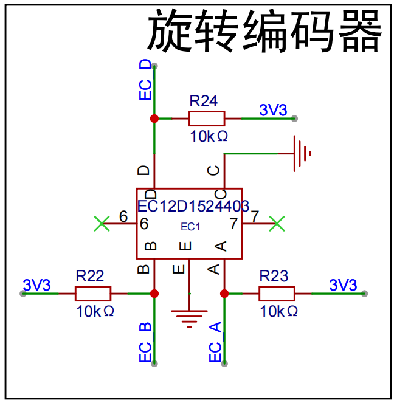

<!DOCTYPE lake>
<h2 data-lake-id="SCfYf" id="SCfYf"><span data-lake-id="u58e52c56" id="u58e52c56">学习目标</span></h2><ol list="u8650444d"><li data-lake-id="u8b1112ca" fid="uf2c68f1f" id="u8b1112ca"><span data-lake-id="uc23dd232" id="uc23dd232">掌握EC12旋钮的相位差方向判断算法</span></li><li data-lake-id="u0b15a74a" fid="uf2c68f1f" id="u0b15a74a"><span data-lake-id="ua69353bd" id="ua69353bd">理解正交编码器硬件接口的电气特性与信号时序</span></li><li data-lake-id="u63bf6871" fid="uf2c68f1f" id="u63bf6871"><span data-lake-id="u9f6359b4" id="u9f6359b4">熟悉基于状态机的按键事件（旋转+按压）解码方法</span></li></ol><h2 data-lake-id="gtOVu" id="gtOVu"><span data-lake-id="u8670f14b" id="u8670f14b">学习内容</span></h2><h3 data-lake-id="zotRB" id="zotRB"><span data-lake-id="u71ac9ab0" id="u71ac9ab0">原理图</span></h3><p data-lake-id="ufc1d1f76" id="ufc1d1f76"></p><p data-lake-id="u34bb31aa" id="u34bb31aa"><span data-lake-id="u45e62b06" id="u45e62b06">A、B、C引脚控制旋转。</span></p><p data-lake-id="ua039257e" id="ua039257e"><span data-lake-id="u26d1c5eb" id="u26d1c5eb">D、E引脚控制按下抬起。</span></p><a class="yuque-card-link" href="https://www.yuque.com/attachments/yuque/0/2025/pdf/27903758/1741658796046-af631ef8-1472-4ab7-94a4-99f8e7889da1.pdf">localdoc：C470597_旋转编码器_EC12E24204A7_规格书_ALPSALPINE(阿尔卑斯阿尔派)旋转编码器规格书.PDF</a><h3 data-lake-id="tsYmu" id="tsYmu"><span data-lake-id="u8b176e2c" id="u8b176e2c">正交编码</span></h3><h4 data-lake-id="dBSxg" id="dBSxg"><span data-lake-id="u6523f260" id="u6523f260">EC12D</span></h4><p data-lake-id="u2435b174" id="u2435b174"></p><h4 data-lake-id="unkpd" id="unkpd"><span data-lake-id="u6c321404" id="u6c321404">​</span><br/></h4><p data-lake-id="ud845ea3b" id="ud845ea3b"></p><p data-lake-id="u4bc45491" id="u4bc45491"><br/></p><p data-lake-id="u27953dba" id="u27953dba"><span data-lake-id="uc04135dc" id="uc04135dc">以C为GND，分别检测 A和C的高低电平，B和C的高低电平。</span></p><h4 data-lake-id="ZVh4X" id="ZVh4X"><span data-lake-id="udd9db0d7" id="udd9db0d7">物理构造</span></h4><p data-lake-id="ub87a4efc" id="ub87a4efc"><span data-lake-id="ud01546a0" id="ud01546a0">内部其实是环形滑动变阻器，只不过安装时错开了90度，旋转时就是出现高低电平不同的效果。</span></p><h4 data-lake-id="mi1dk" id="mi1dk"><strong><span class="lake-fontsize-12" data-lake-id="u8737686a" id="u8737686a" style="color: rgba(0, 0, 0, 0.9); background-color: rgb(252, 252, 252)">旋转方向与相位关系</span></strong></h4><p data-lake-id="uf661980d" id="uf661980d"><span data-lake-id="u159842a3" id="u159842a3">如果 A是下降沿时，此时B为高电平，那么说明，旋钮是顺时针旋转。</span></p><p data-lake-id="u20e916c4" id="u20e916c4"><span data-lake-id="uc53f5380" id="uc53f5380">如果 A是下降沿时，此时B为低电平，那么说明，旋钮是逆时针旋转。</span></p><p data-lake-id="ud952b7a5" id="ud952b7a5"><span data-lake-id="u074c5b68" id="u074c5b68">如果 A是上升沿时，此时B为低电平，那么说明，旋钮是顺时针旋转。</span></p><p data-lake-id="u88b65824" id="u88b65824"><span data-lake-id="uab4e457a" id="uab4e457a">如果 A是上升沿时，此时B为高电平，那么说明，旋钮是逆时针旋转。</span></p><h3 data-lake-id="wSABs" id="wSABs"><span data-lake-id="udfd1c656" id="udfd1c656">驱动实现</span></h3><p data-lake-id="u70c952e1" id="u70c952e1"><span data-lake-id="uc2f0c4ae" id="uc2f0c4ae">采用中断进行状态的判断，通过相位差来实现，状态的区分</span></p><span class="yuque-card-unsupported">[codeblock]</span><h4 data-lake-id="gI0qh" id="gI0qh"><span data-lake-id="u45f1b352" id="u45f1b352">完整代码</span></h4><span class="yuque-card-unsupported">[codeblock]</span><span class="yuque-card-unsupported">[codeblock]</span><span class="yuque-card-unsupported">[codeblock]</span><h2 data-lake-id="yVyuh" id="yVyuh"><span data-lake-id="u184d7b5c" id="u184d7b5c">练习题</span></h2><ol list="u4578085a"><li data-lake-id="ubb517929" fid="u26b601aa" id="ubb517929"><span data-lake-id="u6e4b6d4b" id="u6e4b6d4b">实现EC12驱动</span></li></ol>